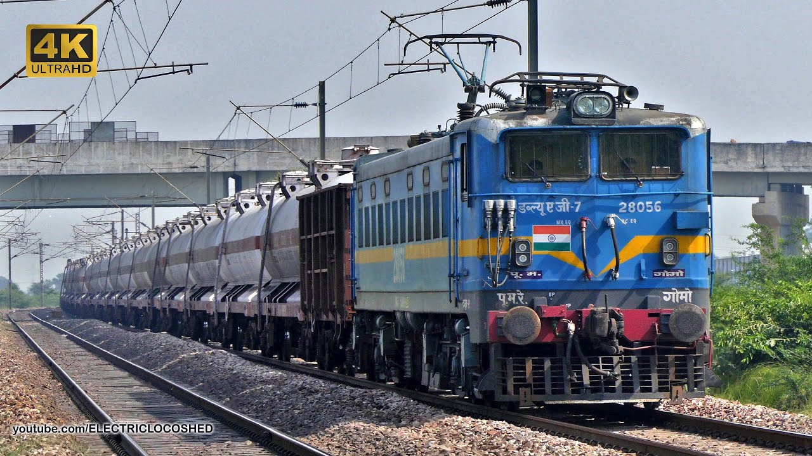

WAG 7 LOCOMOTIVES
WAG 7

The Indian locomotive class WAG-7 is a class of 25 kV AC electric locomotives that was developed in 1990 by Chittaranjan Locomotive Works for Indian Railways. The model name stands for broad gauge (W), alternating current (A), goods traffic (G) engine, 7th generation (7). They entered service in 1992. A total of 1974 WAG-7 were built at CLW and BHEL between 1990 and 2015 by CLW and 2009 and 2023 by BHEL which made them the most numerous class of mainline electric locomotive till its successor the WAG-9.
The WAG-7 is one of the most successful locomotives of Indian Railways,[peacock prose] serving freight trains since its introduction in 1990. Even though with the advent of new 3-phase locomotives like WAG-9 and WAG-12, all WAG-7 locomotives except ones destroyed in accidents, are in service and doing all types of duties.
History

The history of WAG-7 begins in the early 1990s with the aim of addressing the shortcomings of the previous WAG-5 class and remove steam locomotives from IR by a target date of 1990.[3] The WAG-5 though were great successes, had become underpowered to meet the growing demands of the Indian Railways. So in early 1990s IR decided to look for a successor the WAG-5 class. The required specification was of a 5000 horsepower locomotive.
Initially, the Indian railways invited tenders to build locomotives to the new specification. The following responses were received:
CLW submitted their upgraded WAG-5 model with 5000 hp with Co-Co bogies.
BHEL submitted a 5000 hp locomotive with thyristors control and Co-Co bogies.
Each company submitted their prototypes and Indian Railways designated these prototypes as the WAG-7 class and WAG-8 class respectively.[4] Technologically thyristor controlled BHEL WAG-8 was meant to be superior to the WAG-7 which was effectively using tap-changer technology from the 1960s. But due to issues from WAG-8, WAG-7 was selected for mass production.
However, even before the WAG-7 another type of electric locomotive was imported from ASEA in 1988. This locomotive was classified as WAG-6A. However WAG-6As were not selected for mass production because emergence of 3 Phase AC locomotives.